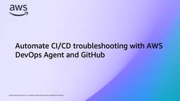
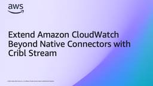
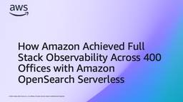

AWS Cloud Operations Blog
フィード

Automate CI/CD troubleshooting with AWS DevOps Agent and GitHub
AWS Cloud Operations Blog
Introduction Every development team knows the frustration: a GitHub Actions workflow fails, a notification fires, and an engineer begins the manual triage loop; read the logs, identify the root cause, write a fix, open a pull request, wait for review, merge, re-run the workflow, and hope it passes. For organizations running dozens or hundreds of […]
1日前

Extend Amazon CloudWatch Beyond Native Connectors with Cribl Stream 1
1
AWS Cloud Operations Blog
Teams running hybrid or multi-cloud estates collect telemetry from proprietary appliances, on-premises Application Performance Monitoring (APM) tools, home-grown agents, and Apache Kafka streams that all must be parsed, normalized, and routed before it’s useful. Amazon CloudWatch lets you collect logs from 60+ AWS services, 20+ third-party tools, and your own applications using CloudWatch pipelines, HTTP […]
2日前

How Amazon Achieved Full Stack Observability Across 400 Offices with Amazon OpenSearch Serverless 1
AWS Cloud Operations Blog
Summary Amazon Corporate Infrastructure Services (CIS) supports 330,000+ employees across 400 offices in 50+ countries. Every day, these employees depend on critical services including video conferencing (Zoom, Webex, Teams), collaboration tools (Slack, Microsoft M365), audiovisual systems, guest Wi-Fi, and ServiceNow for seamless productivity. Before we implemented the Full Stack Observability (FSO) platform, individual teams had […]
3日前

Transform AWS Support Case Workflows with Kiro CLI
AWS Cloud Operations Blog
Operations teams managing AWS infrastructure must resolve issues quickly while maintaining thorough documentation and following best practices. Traditional workflows create bottlenecks where valuable engineering time is consumed by administrative tasks rather than actual problem-solving, directly impacting system availability and customer experience. Kiro CLI removes this administrative overhead. Kiro CLI is an AI-powered command-line assistant for […]
8日前
This Month in AWS Observability: June 2026
AWS Cloud Operations Blog
Introduction Welcome to the latest edition of This Month in AWS Observability, featuring what’s new across Amazon CloudWatch and AI-driven operations this June! Native OpenTelemetry metrics with PromQL querying is now generally available in CloudWatch, 23 new Logs Insights commands launched for deeper statistical and structured analysis, Session Replay now in CloudWatch RUM, and AWS […]
9日前
Deploy OpenTelemetry Gateway on AWS: Monitoring Your Observability Pipeline
AWS Cloud Operations Blog
Deploy an OpenTelemetry gateway on Amazon EKS, export metrics to CloudWatch over native OTLP, and monitor the pipeline's own health with PromQL dashboards and alarms.
10日前
Turn Your Amazon CloudWatch Alarms into Actionable Signals
AWS Cloud Operations Blog
Your alarm fires at 2 AM. You grab your phone, squint at the notification, and see: “ALARM: my-service-alarm has transitioned to ALARM state.” No context. No application. No hint about which of your 200 instances is the problem, or whether it even matters. I’ve been there. We’ve all been there. Alarm frustration often comes from […]
18日前
Using Amazon S3 Server Access Logs with Amazon CloudWatch Logs
AWS Cloud Operations Blog
TL;DR What if you could go from raw Amazon S3 server access logs to a complete security dashboard without building a custom pipeline? The dashboard below is deployed using the CloudFormation template provided in this post. Figure 1: Amazon S3 Server Access Logs Security, Compliance & Audit Dashboard Until now, getting security visibility from Amazon […]
23日前
Log analysis with facets, correlation, enrichment, and automation in Amazon CloudWatch Log Analytics
AWS Cloud Operations Blog
Teams working with distributed applications accumulate logs across multiple log groups, including application logs, access logs, and audit trails. When something needs investigating, an engineer opens the console and starts writing queries from scratch. The same query gets written differently by different people. The results lack context because the log event does not contain who […]
1ヶ月前
Analyzing Claude Code usage with CloudWatch and OpenTelemetry
AWS Cloud Operations Blog
Editor’s note (July 2026): This post has been updated to reflect the launch of Amazon CloudWatch Coding Agent Insights, a purpose-built experience for monitoring AI coding agent usage. The dashboard deployment section now references Coding Agent Insights for CloudWatch users, with the custom PromQL dashboard retained for Amazon Managed Grafana. If your engineering organization uses […]
1ヶ月前
GPU Cost Attribution in Amazon EKS Using Amazon Managed Service for Prometheus, Amazon Managed Grafana, and OpenTelemetry
AWS Cloud Operations Blog
As organizations scale their AI and machine learning workloads on Amazon Elastic Kubernetes Service (Amazon EKS), GPU instances often represent the largest portion of compute costs. Without granular visibility into how these resources are consumed, teams struggle to attribute costs accurately. Consider a shared EKS cluster where Team A (Research) runs experimental ML models on […]
1ヶ月前
Transfer AWS accounts between AWS Organizations while preserving AWS Lake Formation permissions
AWS Cloud Operations Blog
Many AWS customers move their AWS accounts between organizations When your company manages more than one organization, and whether you regularly move accounts between them; or you are consolidating accounts after a merger, acquisition, or divesture. Account migrations are part of operating on AWS. Previously, moving an account meant removing it from the source organization, making it standalone, then inviting it to the target organization. For accounts with AWS Resource Access […]
1ヶ月前
Introducing native histogram support in Amazon Managed Service for Prometheus
AWS Cloud Operations Blog
If you run Kubernetes or microservices workloads on AWS, you probably track latency, request durations, and other value distributions with Prometheus histograms. To do that with classic histograms, you predefine a set of bucket boundaries, and Prometheus emits one time series per boundary plus a sum and a count. A single latency histogram with 20 […]
1ヶ月前
Build a Multi Account Patch Compliance Dashboard with Kiro Specs
AWS Cloud Operations Blog
Introduction Robust patch management is essential for maintaining system security, reliability, and compliance across your IT infrastructure. AWS Systems Manager Patch Manager provides a full-featured patching solution, enabling you to automate the deployment of operating system updates to managed nodes across AWS accounts, on-premises, and multicloud environments. However, as your organization scales across dozens or […]
1ヶ月前
From Monolith to Multi-Account: Pinterest’s AWS Organization Transformation Journey
AWS Cloud Operations Blog
Introduction Pinterest launched in 2009 with a mission to bring everyone the inspiration to create a life they love. As one of the early cloud pioneers, Pinterest grew to hundreds of thousands of resources and exabytes of data within a single AWS account well before most cloud-native organizations operated at that scale or the best […]
2ヶ月前
How Honeycomb improved resilience using AWS Fault Injection Service
AWS Cloud Operations Blog
Building resilience within cloud workloads is an important goal for ISVs to prevent application downtime, increase system reliability, and build customer trust. Honeycomb.io is a fast and collaborative observability platform for software developers and engineering teams to understand and troubleshoot their cloud-native applications. Honeycomb gives you the rich context at sub-second query speeds and AI-assisted […]
2ヶ月前
AWS Observability ICYMI: Jan-May 2026
AWS Cloud Operations Blog
Welcome to the first edition of the AWS Observability ICYMI (In Case You Missed It) recap! The first five months of 2026 has been transformational for AWS observability with over 40 launches across Amazon CloudWatch, AWS X-Ray, Amazon Managed Grafana, and Amazon Managed Service for Prometheus. Two major themes defined this period: OpenTelemetry as the […]
2ヶ月前
Import Historical data from AWS CloudTrail Lake to Amazon CloudWatch
AWS Cloud Operations Blog
Organizations managing workloads on AWS rely on AWS CloudTrail to answer the fundamental questions: Who did what, where, and when? Since January 2022, customers have stored their CloudTrail activity logs in CloudTrail Lake, a managed data lake purpose-built for capturing, storing, querying user and API activity across their AWS environment. As organizations scale across multiple […]
3ヶ月前
Shift-Left Tag Compliance using AWS Organizations and Terraform
AWS Cloud Operations Blog
In this post you will learn about AWS Organizations tag policies, the tag_policy_compliance Terraform provider setting, a reusable tagging module that automatically applies required tags, and a test-driven approach that dynamically validates against your organizational policies.
3ヶ月前
Simplifying Prometheus metrics collection across your AWS infrastructure
AWS Cloud Operations Blog
If you’re running services such as Amazon EC2 instances, Amazon Elastic Container Service (Amazon ECS) containers, and Amazon Managed Streaming for Apache Kafka (Amazon MSK) clusters in AWS, maintaining separate Prometheus servers for each environment creates significant operational burden. Managing scraper configurations, high availability, scaling, and security distracts you from building great applications. AWS managed […]
4ヶ月前